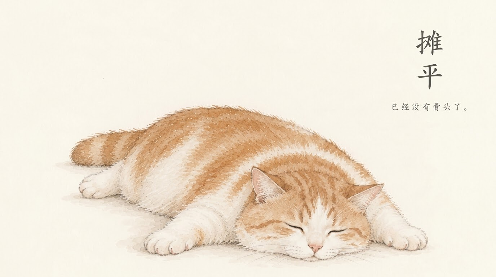

Bedtime Reading
♡
你的声音 · 是我最好的晚安
c
L

💌字句予你
换一张 🔄
“记忆，好像早晨爱人离别后枕头上柔软的凹印，那是他在你生命里存在过的证据”
—— 陈冲《猫鱼》
1 / 3
《猫鱼》
我为你读 · 前言
00:00
00:00
🔀
⏮
▶
⏭
♡
📜 章节选集
▶
前言
朗读
▶
第一章：平江路老房子
待收听
🌙 睡眠定时
时间到后自动停止
15分钟
30分钟
60分钟
书籍分类
🦋
文学小说
♟️
历史通史
🧩
认知思维
🥃
人物传记
🏠
首页
📖
书架
🎙️
声音
⭐
收藏
⚙️
设置